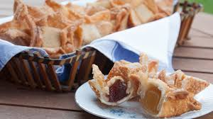

Pastelitos de batata
Que es un pastelito de batata???
Un pastelito de batata es un dulce tradicional argentino que se suele disfrutar en fechas patrias o en
celebraciones. Se trata de una masa frita con forma de flor o estrella, rellena de dulce de batata, aunque
también pueden rellenarse con dulce de membrillo.

Ingredientes
los ingredientes para preparar pastelitos de batata son:
Para la masa se necesitan:
500 g de harina,
,100 g de manteca (o mantequilla) derretida
,Agua tibia (cantidad necesaria)
,1 cucharadita de sal
,Almidón de maíz (para espolvorear y estirar la masa).
De relleno podemos usar la batta o el membrillo
Para almíbar
200 g de azúcar
,200 ml de agua
y esencia de vainilla o cáscara de limón (opcional)
y por si quieres decorlo por encima puedes usar azucar impalpable
Preparacion
para poder preparar pastelitos de batata necesitamos:
Primero devemos preparar la masa. Se deve mezclar la harina, la sal y la manteca derretida, y agrega
agua tibia de a poco hasta
formar una masa suave. Deja descansar por unos 20 minutos.
Luego divide la masa en dos partes y estira cada una en un rectángulo fino. Espolvorea
almidón de maíz entre las capas para que el hojaldre quede más crujiente. Corta la masa en cuadrados.
Despues coloca un trozo de dulce de batata o membrillo en el centro de un cuadrado de masa y cúbrelo con
otro
cuadrado. Presiona suavemente los bordes y dobla las puntas hacia adentro para darles la forma de
estrella o flor.
Fríe los pastelitos en abundante aceite caliente hasta que estén dorados y crujientes. Sácalos y
colócalos sobre papel absorbente.
Y para terminar si deseas, puedes preparar un almíbar con azúcar y agua, llevándolo a hervor por unos
minutos.
Baña los pastelitos con este almíbar o espolvorea azúcar por encima.
Y bueno... eso seria todo, espero que esta receta les parezca de lo mas practica y facil para la preparacion
de los pastelitos de batata. Espero disfrute de estos pastelitos acompañados de un buen mate, unos saludos
cordiales y hasta luego amigos
Para volver al inicio haz clic aquí